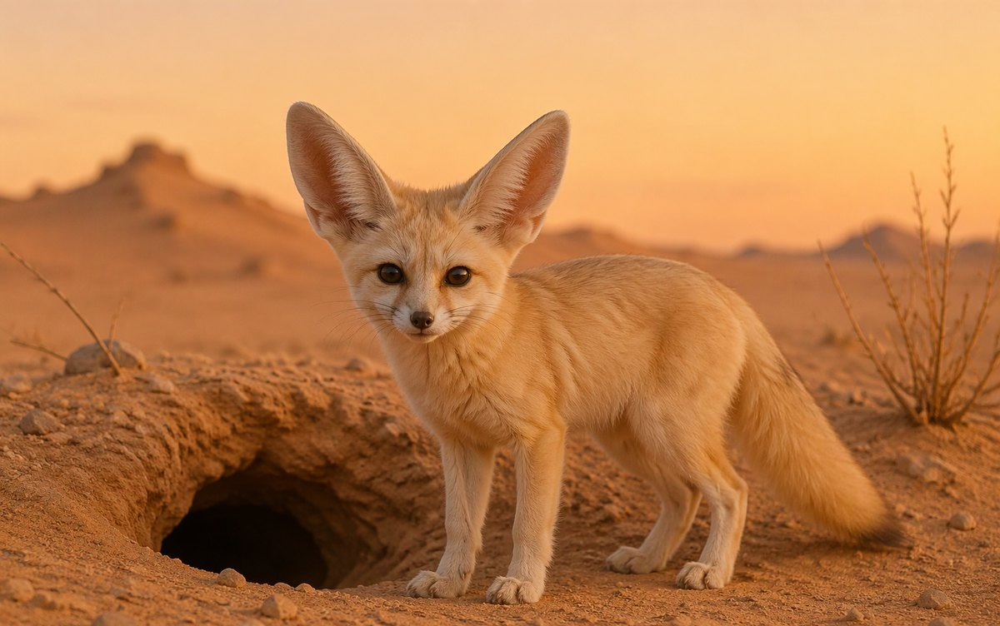

Who eats what?
Food chains and the passive voice
Eight complete lessons. Open each lesson for class, or go straight to its four-part after-class review.
L1—L8 · Lessons + review
Food chains and the passive voice
Passive questions and short answers
Story facts, guesses and evidence
Listening and a two-role interview
Habitats and complete where clauses
Main ideas and supporting details
Plan, write and revise three sentences
Transfer unit language to a new fact card